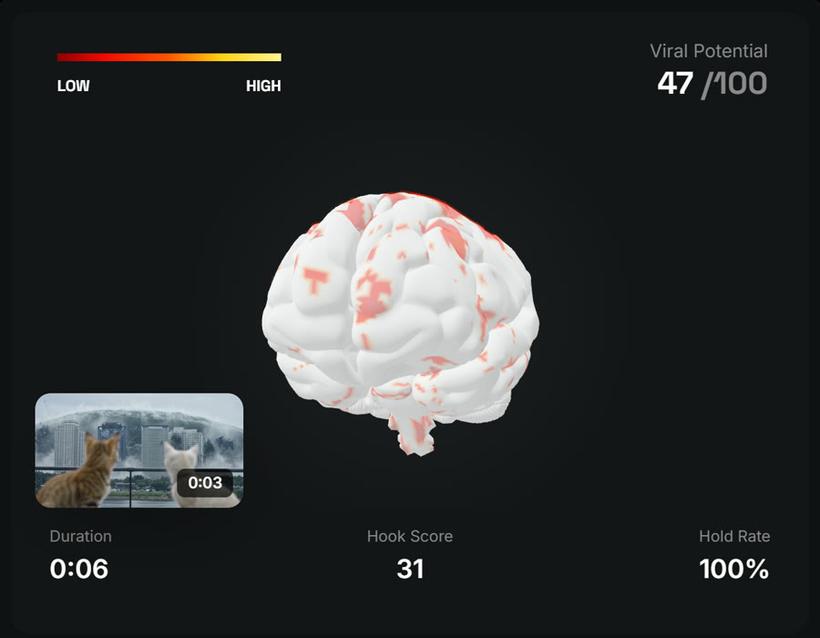

أداة Virality Predictor من Higgsfield تحلّل أول 15 ثانية من مقطعك: تعرضها على جمهور افتراضي، وتقيس استجابة الدماغ للصورة والصوت والذاكرة والانتباه واللغة، ثم تعطيك علامة من 100. في هذه الصفحة كل خطوة ومعها رابطها الرسمي.
تحميل الدليل (PDF)افتح الأداة
رقم من 100 يقدّر قدرة المقطع على إيقاف التمرير، على شريط يتدرّج من الأحمر إلى الأصفر.
صفحة الأداة الرسميةقوة الثواني الأولى، مع تحديد اللحظة التي تبلغ فيها الافتتاحية ذروتها.
إعلان Higgsfield الرسميالمناطق التي تفاعلت مع مقطعك: البصر، والسمع، والذاكرة، والانتباه، واللغة.
قسم How it workshttps://mcp.higgsfield.ai/mcp ثم اضغط Connect.Run Virality Predictor on this clipغيّر أول جملة: ابدأ بسؤال يعيشه المشاهد أو بنتيجة واضحة، ثم أعد التحليل وقارن.
مقطع: جملة واحدة ضاعفت المشاهداتأضف تغييراً كل ثانيتين: قطع، أو تكبير، أو عنصر جديد، أو وعد بشيء يأتي لاحقاً.
أعد التحليلمن صفحة المقطع في إنستغرام اضغط View insights وراقب المشاهدات ومتوسط مدة المشاهدة.
دليل إنستغرام للإحصاءاتثلاثة أرقام في الإحصاءات تخبرك إن كانت المشكلة في البداية أو الوسط أو النهاية.
مقطع: 3 أرقام تشرح السببجرى التحقق من جميع الروابط بتاريخ 6 تشرين الثاني 2026، وقد تتغيّر الأسعار والميزات.
تحميل الدليل (PDF)أنشر أداة أو فكرة عملية جديدة باستمرار، ومعها ملف مجاني بالروابط. تابعني على إنستغرام ليصلك كل جديد.
تابع @sabbah.mktبقية الملفات